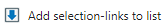
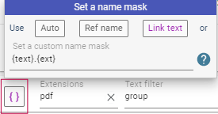
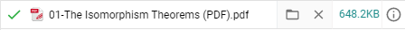
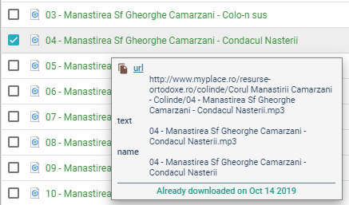

Quick Start Tutorial
Otherwise, for every item in the download queue you will be prompted to choose a name/directory via a Save As dialog (try to figure out what that means for a list of, say, 500 downloads or more)!
| Basic usage | A more flexible workflow | Download list panel | Some random tips |
Basic usage
The user go to some web page, right click and from the contextual menu choose the . This will show a quick download dialog:
The files start to download and, if all goes well, the user will found them in the
Downloads/Algebra subfolder.
That's all!
Tip: If the user make a text selection on the web page, the addon will try to include only the links from that selection (the context menu will also include the option )
This minimal workflow lacks advanced filtering/renaming options but may be appropriate in many situations.
A more flexible workflow
Say, for example, you visit a math Lecture Notes type site (with many pdf resources) and you need to download only the resources that include the term "group" inside their link text (as user see it on page):
The typical Simple mass downloader popup window will look like this
The steps explained:
-
First step: you press the Load page links button. This usually fills the resources list with all sort of links, not only the desired pdfs.
-
Second step: you have to filter this list, such that only desirable links stay here. You can start filtering process by writing
pdfin the dedicated extensions field (orpdf epub docif you seek more types) and next write the termgroupin the Text filter boxNow you have isolated all desired pdf. Next check all items at once (using the top master checkbox) or only a range (usingshift + click) -
Third step: setting a custom download directory.By default, all downloaded files go to the Chrome global download directory (usually named Downloads)My addon cannot set folders outside this main download directory (a known webextensions system limitation) but what it's possible and really useful is to set subfolders inside it.So you write
Algebra/Groupsin the dedicated directory field. Now all downloaded files will go specifically to theDownloads/Algebra/Groupssubfolder. -
Fourth step: setting a custom name mask.All files have a default filename. For example the highlighted item from the screenshot above will get the name
MIT18_703S13_pra_l_1.pdfBut many times it's better to use for naming the text of the link, as the user see it on the web page. For this you have to use the name mask{text}.{ext}.Now the same item from above will get the much more descriptive nameThe alternating groups (PDF)(at least for mathematicians...) As you see, this specific mask is useful enough to deserve a dedicated button but the user can use a lot of other masks (click the corresponding help button for more details). -
Last step: Now you only have to click the download now button so that the checked items will start downloading immediately. Or, if you prefer, only send the items to queue by clicking on the other button and later selects the items for downloading.
Download list panel
Here you can do the normal download management: start items individually or in groups, pause, resume, cancel, remove items etc.
Note that there is aSelect allbutton and also is possible to select only a range of items usingshift + clickor individually (usingctrl + click)The inactive items from the queue can still be edited before downloading, either individually (using the corresponding button) or in group (using the multirename dialog). Note that the selected items can be moved up/down using
ctrl + up/down arrow keys. This can be useful when using contor masks, for example.The multirename dialog it's a more advanced version of the simple name mask dialog from the resources list panel, with search/replace or preview functionality.Finally, the user selects the desired items and clicks the Start selected button. A finished item looks like:
You can directly open the file clicking its name or open the directory where the file was downloaded using the corresponding folder icon.Some random tips
- Those items from the resource list that are also on the download list use a distinctive color for their checkboxes ( or ) and cannot be sended again on download list (unless they are first removed from the download list). So, in general, you should not worry for sending the same file multiple times on the download list.
- The extension remembers if an item was downloaded in the current session or recent history and
make them visible on the resource list using a green color text

-
Note that the user may get all attributes/information available for an individual item from the
resource list by right-clicking it.
This will open an informative popup with all attributes available for that item (
url/title/textetc.), including a thumbnail view for image type items (see the image above for an example). -
On the download list the user can move up/down a group of selected items by using
ctrl + up/down arrow keys. This can be useful when using contor masks, for example. - The user can adjust the addon popup width using the button (three value toggle).
-
There are some hotkeys available:
-
Ctrl + Vfor paste/import from clipboard (on both resource and download list panels) -
Ctrl + Afor select all items (on download list panels) -
Ctrl + Sfor start selected (on download list panels)
-
What's next
There are many other features. For example:
-
The links can be imported from clipboard, from a text file or generated using a
Pattern URLdialog
Also, the links can be exported using a flexible mask system (this can be useful if the user wants to use the generated list with an external file downloader). See the menu button. - The user can create complex filters and save them as custom categories (see the Custom Categories section from the settings dialog)
- The addon has a built-in routing system (see the Automatic Folders section from the settings dialog). Here the user can define custom folders where downloads can be automatically directed based on user-defined rules.
- For images, there is also a special thumbnails view where items may be filtered by size or ordered by size descending order
- The addon has (an experimental) tabs dialog where the user selects tabs (active tab, all tabs, left or right tabs) and optionally filters pages items by various criteria. Finally, the found links are added to the resource list and ready for further operation (see the button).